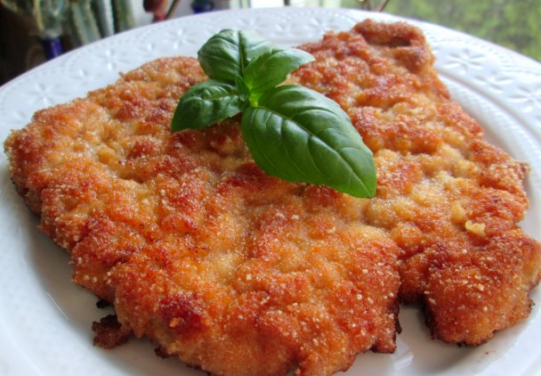

Schabowy

Description
Kotlet schabowy – kotlet panierowany ze schabu przypominający sznycel wiedeński. Współcześnie jedna z popularnych potraw w kuchni polskiej.
Ingredients
- 600 g schabu bez kości.
- sól i pieprz.
- do namoczenia: mleko.
- do obtoczenia: 2 łyżki mąki, 2 jajka, 5 łyżek bułki tartej.
- do smażenia: 6 łyżek masła klarowanego lub smalcu.
Steps
- Ostrym nożem odciąć białą otoczkę z żyłki po zewnętrznej części mięsa. Pokroić na 4 plastry. Położyć na desce i dokładnie roztłuc na cieniutkie filety (mogą wyjść duże, wielkości pół talerza). Do rozbicia mięsa najlepiej użyć specjalnego tłuczka z metalowym obiciem z wytłoczoną krateczką.
- Filety namoczyć w mleku z dodatkiem soli i pieprzu (ewentualnie z dodatkiem kilku plastrów cebuli) przez ok. 2 godziny lub dłużej jeśli mamy czas (można też zostawić do namoczenia na noc).
- Wyjąć filety z mleka i osuszyć je papierowymi ręcznikami. Doprawić solą (niezbyt dużo, bo zalewa z mleka była już solona) i pieprzem, obtoczyć w mące, następnie w roztrzepanym jajku, a na koniec w bułce tartej.
- Na patelni rozgrzać klarowane masło (ok. 1/2 cm warstwa) lub smalec. Smażyć partiami po 2 kotlety, na większym ogniu, po 2 minuty z każdej strony. Następnie zmniejszyć ogień i smażyć jeszcze po ok. 3 minuty z każdej strony. Przetrzeć patelnię papierowym ręcznikiem i powtórzyć z kolejną partią, na świeżym tłuszczu.
- Usmażone schabowe odsączyć z tłuszczu na papierowym ręczniku i podawać z ziemniakami i kapustą lub mizerią.